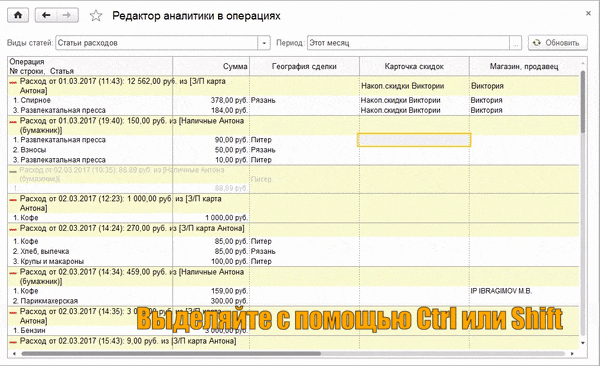
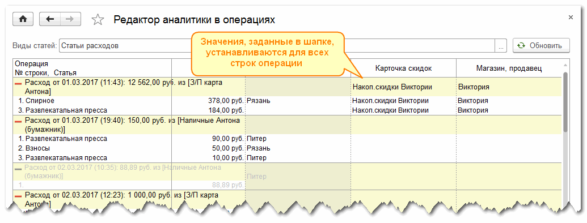
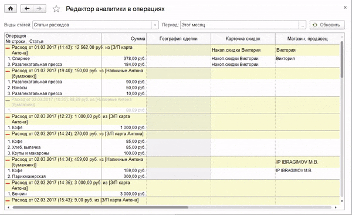

Обработка предназначена для быстрого изменения аналитики в записанных ранее операциях. Используйте ее, например, для расстановки аналитики в операциях, загруженных из внешних источников, или для корректировки значений аналитики.
Укажите вид статей и нужный период и нажмите кнопку Обновить. В строках списка будут выведены операции и статьи, а в колонках - значения аналитик.
Изменить значение аналитики можно сразу для нескольких операций. Для этого выделите нужные строки операций с помощью левой кнопки мышы в сочетании с клавишами Ctrl или Shift - так же, как выделяются несколько элементов в списках. Выделять следует ячейки только в одной колонке, т.к. одновременно можно изменить значения только одного вида аналитики.

Обратите внимание: если вы изменяете значение аналитики в шапке операции (в строке, выделенное светло-желтым цветом), то во всех строках для измененного вида аналитики будет установлено именно это значение.

Для изменения занчений в выделенных ячейках нажмите F2 и введите или выберите из списка новое значение аналитики. Изменения будут записаны в выделенных операциях сразу после завершения редактирования.

Чтобы очистить значение аналитики используйте контекстное меню. После выделения нужных ячеек списка нажмите на любой выделенной ячейке правую кнопку мыши и выберите команду Очистить... При очистке значений действуют те же правила, что и при изменении: если очищать значение в шапке операций, значения будут очищены во всех ее строках. Изменения сохраняются в операциях тут же.
Дополнительная информация: Настройка аналитики в стратьях